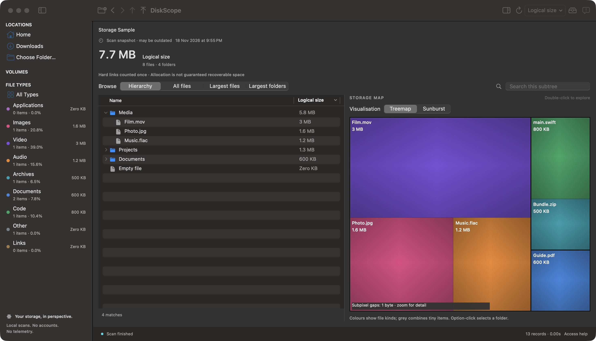
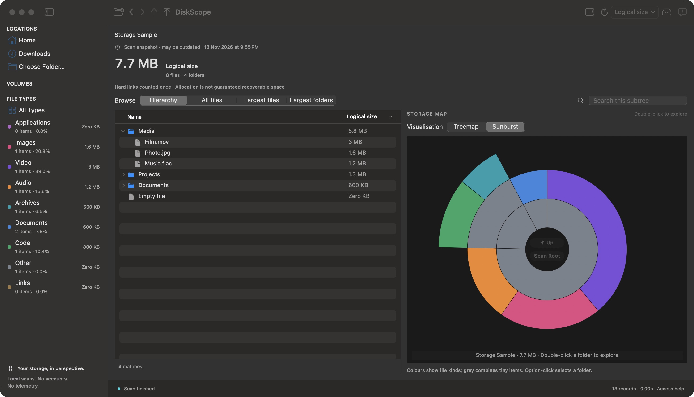
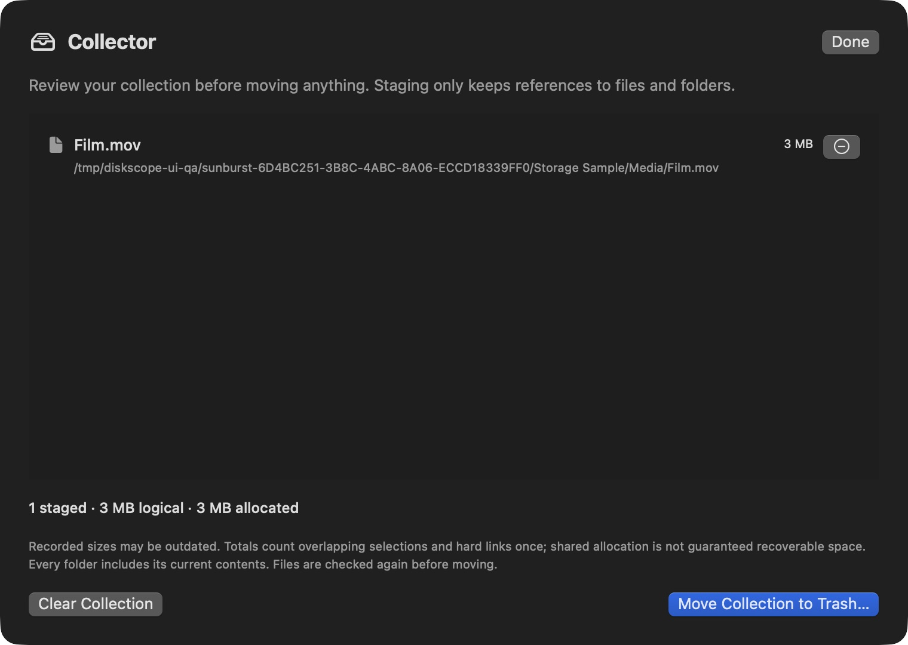

Explore in two dimensions.
Or around the circle.
Switch between the familiar rectangular treemap and a circular sunburst. Both follow the same folders, size metric and selection. Changing the view doesn’t start another scan.
Development preview
Find the files taking up space. Follow them through your folders.
Make room with a clear view of what you’re moving to Trash.
Built for Apple Silicon · macOS 14 or later
No public release available yet.
One scan. More perspective.
Three ways to explore and prepare a cleanup,
connected to the same file hierarchy.



Screenshots from a DiskScope development build using demonstration files.
Made for finding, then deciding.
Move naturally between the big picture and the files behind it.
Switch between the familiar rectangular treemap and a circular sunburst. Both follow the same folders, size metric and selection. Changing the view doesn’t start another scan.
The native folder hierarchy, breadcrumbs and Scan Root control keep you oriented. Find an item in the map, inspect it, reveal it in Finder or take a Quick Look.
Saved scans restore locally, without walking the whole drive again. Cached results are marked as potentially stale, with an explicit Refresh when you want a new picture.
Add candidates to the Collector without moving the files. Review the list and confirm before the native Trash operation. Successful changes update the current scan; failed items remain available to review.
At home on your Mac.
Built with Swift, AppKit and SwiftUI for Apple Silicon. A fast metadata scanner does the heavy work, while familiar Mac controls keep exploration straightforward.
Your files stay yours.
Storage analysis happens on your device. Your file inventory isn’t uploaded. There’s no account, analytics or cloud service required to explore your storage.
Choose the folders you want to scan. For broader scans, you can grant optional Full Disk Access. Read the macOS permissions guide.
Public releases use Sparkle to check for and verify signed updates over HTTPS. Check for updates and manage your preferences.
DiskScope for Mac
The download will appear here once a verified public release is available.
Requires macOS 14 or later and an Apple Silicon Mac.
shasum -a 256 in Terminal, drag the ZIP into Terminal, and press Return. Compare the result with the published SHA-256 checksum.Your approval applies to DiskScope. On a managed Mac, your administrator may control whether approval is available. Apple’s first-launch instructions.